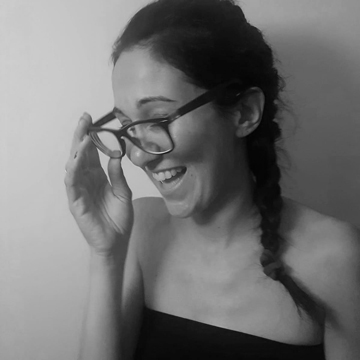

j-ISBA board members
Roberta De Vito. Section Chair
Roberta De Vito is an Assistant Professor at Brown University in the department of Biostatistics and at the Data Science Institute. Previously, she was a postdoctoral fellow at Princeton University in the Department of Computer Science, advised by Barbara Engelhardt. She was a former visiting PhD Students at Dana-Farber Cancer Institute and Harvard T.H. Chan School of Public Health under the supervision of Giovanni Parmigiani and Lorenzo Trippa. She graduated at the University of Padua in Statistical Science in 2016 advised by Ruggero Bellio. The focus of her research is to develop statistical modeling for the analysis of big and high-throughput data, such as epidemiological and genomic data analysis. You can find something more at her webpage.
Xenia Miscouridou. Section Chair-Elect

Xenia is a Research Associate at Imperial College London in the Statistics Section of the Department of Mathematics. She has worked for AIG as a Machine Learning Scientist developing AI models for insurance and investment. She holds a PhD in Statistical Machine Learning from the Department of Statistics at the University of Oxford supervised by Francois Caron and Yee Whye Teh. During her PhD, she has been a Research Visitor at the Alan Turing Institute in London and the Courant Institute at NYU. She previously completed the Part III of the Mathematical Tripos at the University of Cambridge and a BSc in Mathematics from Imperial College London. Xenia's main PhD focus was on Nonparametric Bayesian methodology for random graphs and network modeling with her research to date being broader, including deep generative models and unsupervised learning techniques. Her research goal is to build methods that combine the strengths of statistics and computation aspiring to answer scientific questions with impact in real life. You can find out more about Xenia at her webpage and twitter account.
Sally Paganin. Treasurer

Sally Paganin is a Postdoctoral Research fellow in the Department of Biostatistics at Harvard T.H. Chan School of Public Health , collaborating with Jeff Miller on statistical methods for early cancer detection. Previously, she was Postdoctoral Researcher at UC Berkeley, where she worked with Perry de Valpine & Chris Paciorek on Bayesian methodology and algorithms. She is also part of the core team developing NIMBLE, a flexible R-based software for Bayesian hierarchical models. She is originally from Italy, where she obtained her PhD in Statistical Sciences at University of Padova in 2019. Her research focuses on Bayesian nonparametrics and latent variable models, along with the development of statistical software and algorithms. You can find more about her here.
Akihiko (Aki) Nishimura. Program Chair
Aki is an Assistant Professor in the Department of Biostatistics at Johns Hopkins University. He completed his PhD in Applied Mathematics and Statistics at Duke University, during which he received Laplace Award and Savage Award (2nd place) for his research. He develops statistical methods and software to extract useful insights from complex large-scale data sets, arising from various real-world applications. He is currently involved in the Observational Health Data Sciences and Informatics collaborative, Precision Medicine Initiative at Johns Hopkins, as well as in development of the statistical phylogenetics software BEAST. His expertise includes Monte Carlo simulation, high-performance computing, computational mathematics, as well as open-source software development. You can find more about him at here.
Willem van den Boom. Secretary
Willem is a Research Fellow at Yale-NUS College at the National University of Singapore working with Prof. Maria De Iorio on Bayesian inference for graphical models. He got his BSc with a focus on Mathematics and Computer Science in 2014 from University College Roosevelt, a small liberal arts college in the Netherlands, and his PhD in Statistics from Duke University in 2018 under supervision of David Dunson and Galen Reeves. He moved to Singapore in 2018 for a postdoctoral Research Fellowship with Alexandre Thiery. You can find something more at his webpage.